일러스트레이터 작업가이드
- 인쇄할 파일은 모두 어도비 일러스트에서 작업해주시기 바랍니다. (어도비 일러스트 또는 PDF로 저장해주세요.)
- 프로그램 버전은 2024를 기준으로 작업하였습니다. 버전은 CS6버전으로 하위 조정해 보내주세요.
- 주문하신 데이터 수정은 불가능합니다. 작업가이드 확인 후 데이터를 업로드해 주세요.
- 포함이 되지 않은 이미지 혹은 변환하지 않은 서체로 인해 발생된 인쇄오류는 당사에서 책임질 수 없습니다.
01
파일 저장 방법
-
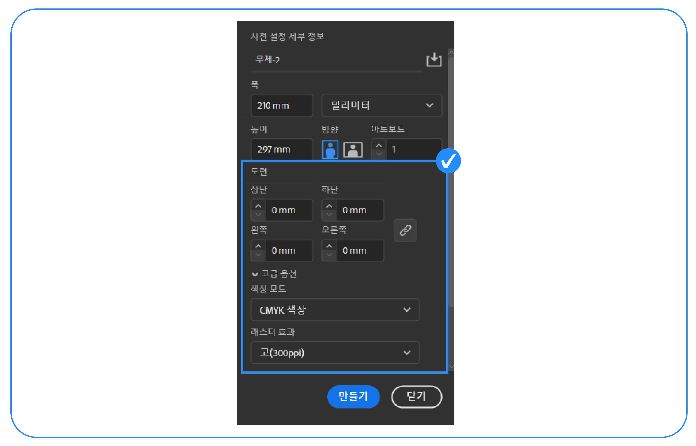
- 색상은 반드시 CMYK 모드에서 작업하여 주세요. 도련값은 모두 0으로,해상도는 300ppi로 설정해주세요.(이미지 해상도가 낮을 경우 깨질 수가 있으니 주의바랍니다.)
-
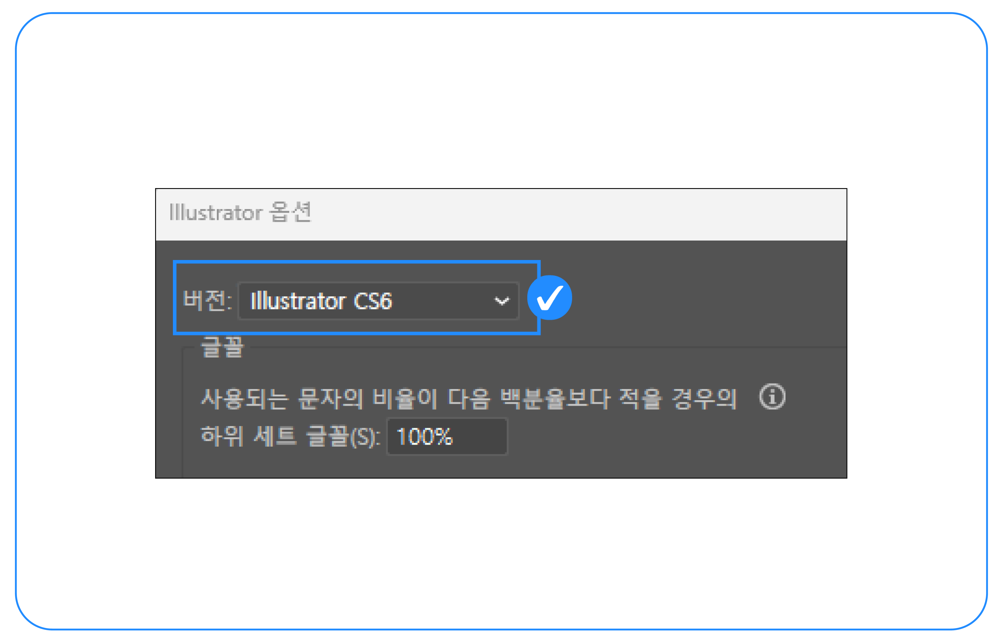
- 인쇄 오류를 방지하기 위해 CS6 버전으로 저장해주세요.
-

- PDF로 저장할 시 고품질 인쇄로 설정해주세요. 문서 도련설정을 체크해 주시고텍스트와 라인 아트 압축을 체크해 주세요.
-

- PDF파일로 저장할 시 양면 인쇄는 앞면(전면), 뒷면(후면) 순으로 차례로 배열해 주세요.
-
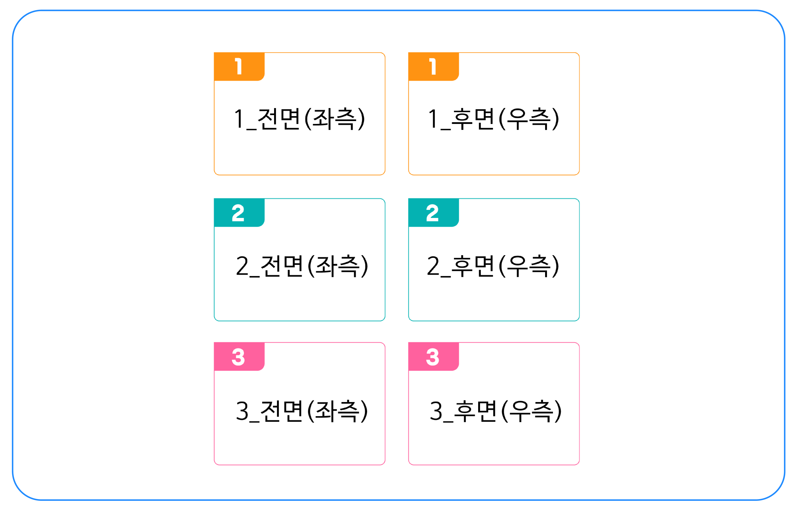
- Ai파일로 저장할 시 앞면(전면)은 좌측, 뒷면(후면)은 우측으로 대지 순서에 맞춰 차례로 나열해 주세요.
-
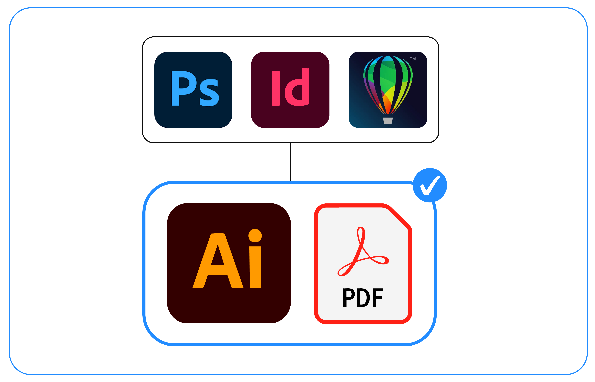
- 어도비 일러스트 외 다른 프로그램으로 작업할 시 Ai또는 PDF로 저장해주세요.
02
전처리 작업하기
-
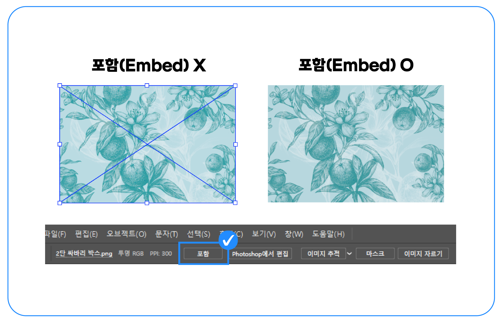
- 사용한 이미지는 반드시 포함(Embed) 시켜주세요.
-

- 잠겨있는 레이어는 풀어주고 사용하지 않는 레이어는 삭제해 주세요.
-
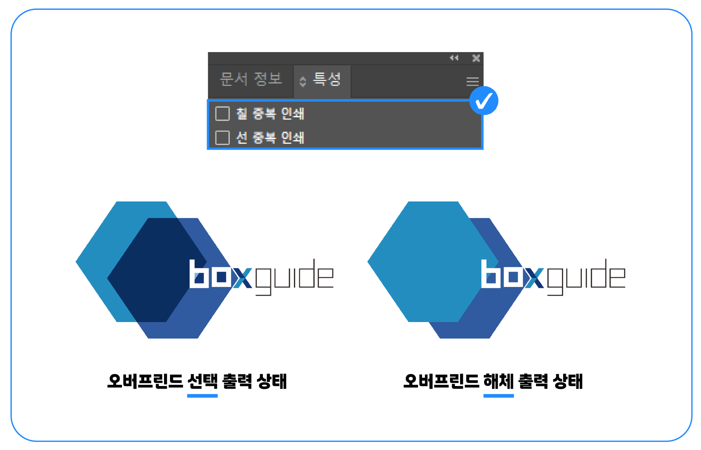
- 칠/선 중복 인쇄(Overprint)를 해제해 주세요. (창(W) - 특성)오버프린트를 선택한 후인쇄를 하게 되면 모니터와 다르게 인쇄가 됩니다.
-

- 모서리를 둥글게 처리한 경우 모양확장을 해주세요.
-
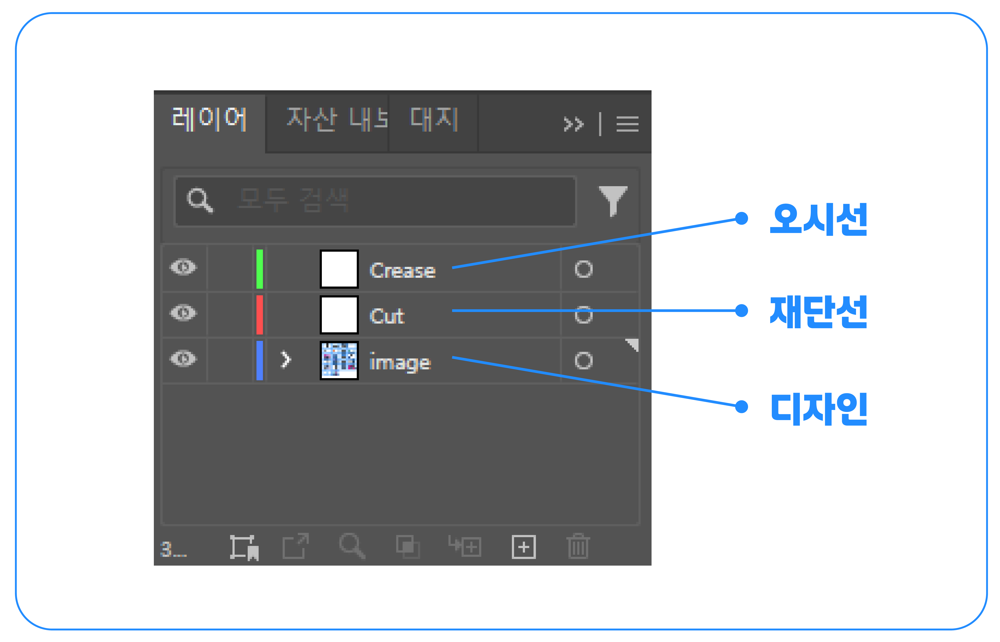
- 레이어 이름 지정 시 영문으로 표기해주세요. (오시선=crease, 재단=cut, 디자인=image) 레이어가 제대로 지정이 되어있지 않을 시 데이터 오류나 제작물에 문제가 발생할 수 있습니다.
-
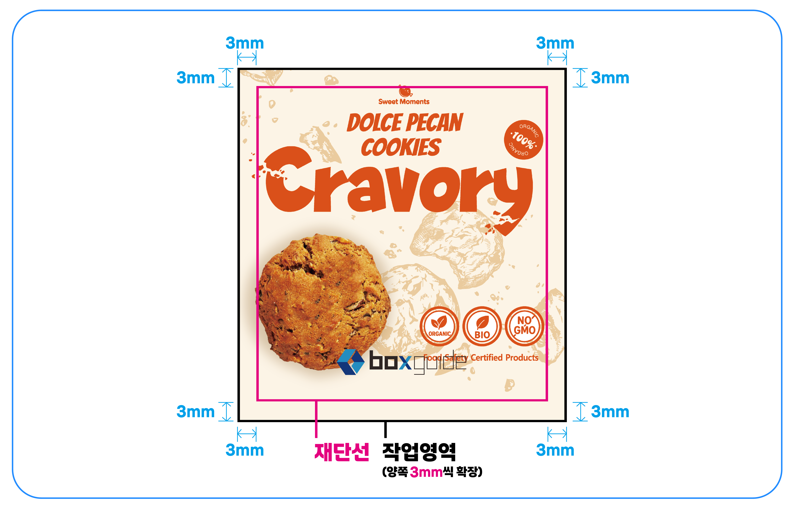
- 이미지를 원하시는 사이즈 보다 재단선 바깥으로 사방 3mm 늘려서 작업해 주세요.(재단시 오차가 발생할 수 있습니다.)
03
칼선 작업하기
-

- 칼선은 M : 100%, 선두께 0.5pt로 작업하고, 오시선은 C : 100%, 선두께 0.5pt로 작업해주세요.(반드시 일러스트로 면이 아닌 선으로 작업해주세요.)
-
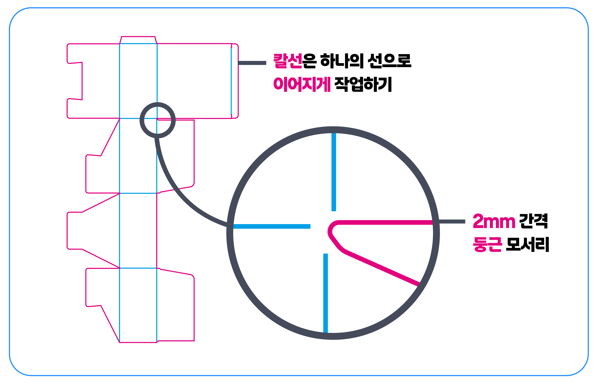
- 칼선이 급하게 꺾이는 부분은 칼선과 오시선 사이에 2mm 간격을 두고 오시선을 작업해 주세요.(칼선과 오시선이 맞닿아 있을 경우 뜯김 현상이 발생할 수 있습니다.)또한 각진 모서리가 아닌 둥근 모서리 형태로 작업해 주세요.
- 칼선은 하나의 선으로 이어지게 작업해 주세요. (선이 끊어져 있을 경우 뜯김 현상이 발생할 수 있습니다.)
-

- 칼선, 오시선은 반드시 별색 작업을 해주세요. (칼선이 동시에 인쇄되어 인쇄사고가 발생할 수 있습니다.)
- 칼선, 오시선은 모두 선 중복 인쇄(Overprint) 를 체크해 주세요.
-
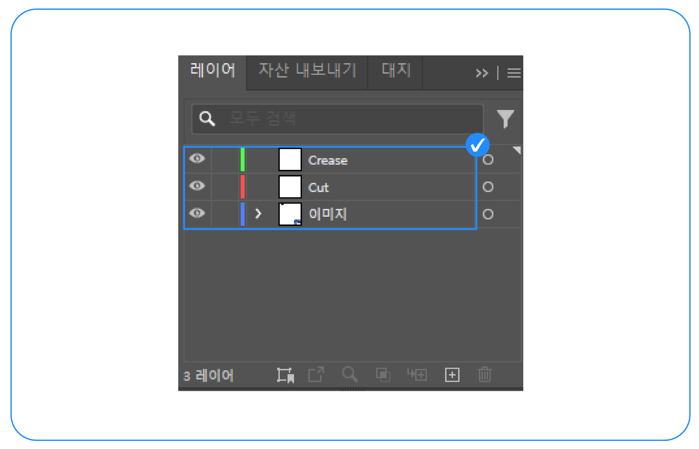
- 칼선, 오시선, 디자인 레이어들을 각각 나눠서 작업해 주세요.
-

- 칼선과 인쇄파일은 같은 위치에 배치해 주세요.
-
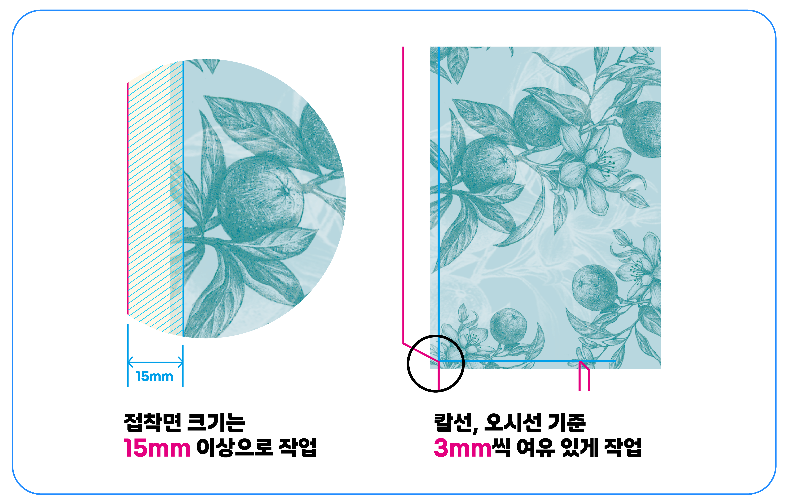
- 접착면 양쪽(붙이는 면, 붙는 면)에는 이미지 없이 비워주세요. (접착면까지 인쇄 시 접착이 떨어질 수 있습니다.)
- 접착면 크기는 15mm 이상으로 작업해 주세요.
- 이미지를 칼선보다 3mm 크게 작업해 주세요.
04
글씨는 확장하기
-

- 레이아웃에 있는 모든 서체는 반드시 윤곽선 또는 확장(Expand) 처리를 해주세요. (윤곽선 또는 확장 처리를 하지 않은 글자는 기본 글꼴로 대체되어 인쇄될 수 있습니다.)
-

- 문자(Type) – 글꼴 찾기(Find font) 순대로 확인해 남아있는 서체가 있는지 다시 한 번 확인해 주세요.
05
개체 래스터화하기
-

- 그라데이션, 투명도, 흐림, 필터효과, 패턴 등 효과와 고정점들로 이우러진 개체는인쇄가 반영되지 않을 수 있으니 레스터화를 해주세요. 오브젝트(Objact) – 레스터화(Rasterize)
-
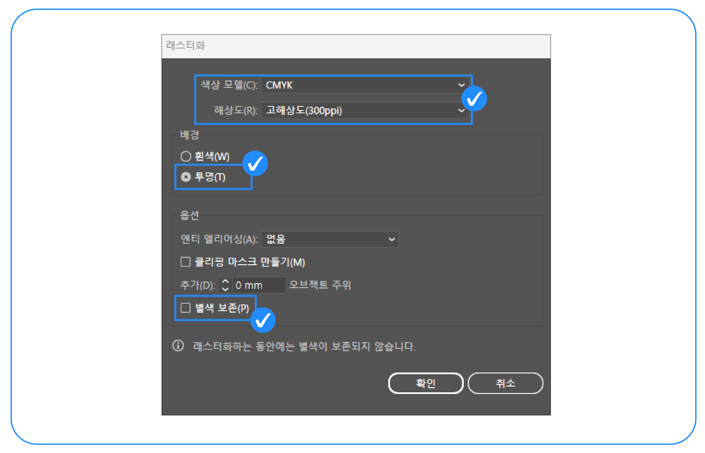
- 반드시 색상모드는 CMYK 모드, 해상도는 300dpi로 체크해 주세요.
- 옵션은 체크하지 않고 배경은 투명으로 선택해주세요.